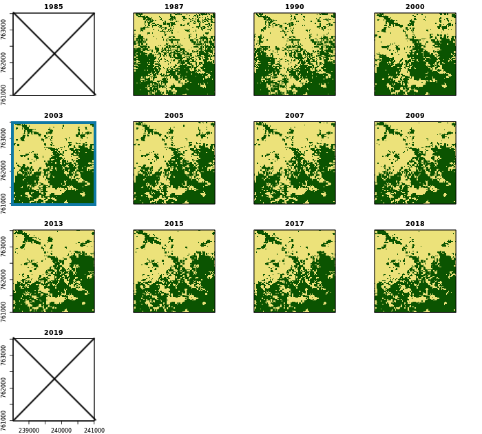

4.1.2 Nettoyage des cartes brutes
Les series temporelles des cartes forêt/non-forêt brutes sont lissées et filtrées pixel par pixel pour les raisons suivantes:
- Remplissage des données manquantes (nuages, ombres, L7 SLC-off),
- Lissage des bruits (pixels qui changent entre forêt et non-forêt plusieurs fois)
- Filtrer la régénération temporaire par les fourrés, observée sur les jachères.
- La première étappe, est la remplissage des données manquantes: les données manquantes entre deux observations de forêt deviennent forêt, celles entre deux observations de non-forêt deviennent non-forêt.
- Ensuite, une fenêtre coulissante de taille 5 est appliquée, c’est-à-dire qu’une observation est attribuée à la classe qui est observé le plus fréquemment dans la fenêtre qui inclu les deux observations précédentes et les deux suivantes. Pour l’évaluation de la deuxième et de l’avant-dernière observation, une fenêtre coulissante de taille 3 est appliquée. La première et la dernière observation ne sont pas ajustées, il faut les ignorer dans la suite. Les observations manquantes sont remplis dans la mesure possible. Toute la procédure est répétée jusqu’à ce qu’il n’y a plus de changements.
- Les années manquantes sont ajoutées pour créer une série annuelle. Les observations manquantes sont remplacées par la classe de l’observation précédente. Lorsque les observations initiales sont manquantes, elles sont remplacées par la classe de l’observation suivante. Dans les situations de régénération (forêt suit non-forêt), les 9 premières années sont marquées comme “reboisement potentiel”. Si la forêt disparaît à nouveau après moins de 10 ans, les observations sont remplacées par la classe non-forêt. Si la régénération reste, elle est considérée comme un reboisement après 10 ans.
Après la nettoyage des séries temporelles pixel par pixel, une nettoyage spatiale est réalisé pour éliminer les surfaces forestières < 0,5 hectares. Pour cela, une carte est créée de tous les pixels qui étaient une fois observées comme forêt sur toute la série des cartes. Sur cette carte, toutes les surfaces forestières ayant moins de 6 pixels liés (soit moins de 0,54 hectares) sont éliminées. Ce masque forestier est ensuite appliqué à toutes les cartes forêt/non-forêt de la série. Cela signifie que seuls les pixels forestier qui ont fait partie d’une surface forestière ≥ 0,54 hectares dans la série des cartes sont retenus comme forêt.
Example
La figure suivante montre les cartes forêt/non-forêt après la nettoyage temporelle et spatiale pour une région au sud de Kpalimé (voir série des cartes brutes pour comparaison).

Script R: 03_NRF-MRV/01_MCF/_src/02_clean-fc-maps.R
###############################################################################
# 02_clean-fc-maps.R: nettoyage des cartes brutes du couvert forestier
# -----------------------------------------------------------------------------
# Bern University of Applied Sciences
# Oliver Gardi, <oliver.gardi@bfh.ch>
# 13 Mai 2020
# Définitions des variables ===================================================
COV.FC <- 30
RAW.DIR <- DIR.MRV.MCF.RAW
CLN.DIR <- DIR.MRV.MCF.CLN
# Définitions des fonctions ===================================================
# Nettoyage temporel d'une série d'images -------------------------------------
#
# @param path Chemin WRS
#
# @return --
#
clean.temporal <- function(path) {
# Préparation des images --------------------------------
# Charger les cartes brutes
maps <- stack(dir(paste0(RAW.DIR, "/FC", COV.FC, "/", path),
pattern=".*[[:digit:]]{4}\\_F.*\\.tif$", full.names=TRUE))
map.names <- sub("r$", "", names(maps))
# Noms de cartes à utiliser dans les colonnes de la matrice
map.cols <- sub(paste0(path, "\\_"), "X", sub("\\_[[:alnum:]]+$", "M", map.names))
# Names à utiliser pour les années sans carte
no.map.cols <- paste0("X", YEARS.ALL[!YEARS.ALL %in% gsub("[[:alpha:]]", "", map.cols)], "_")
# Joindre et ordonner les noms de colonnes
col.order <- c(map.cols, no.map.cols)[order(c(map.cols, no.map.cols))]
# Convertir les cartes en matrice (une carte par colonne, prend du temps)
maps.values <- values(maps)
colnames(maps.values) <- map.cols
# Nettoyage parallèle des trajectoires des pixels -------
# Définir des sous-ensembles des pixels (lignes) pour le traitement parallèle
nsubsets <- CORES
subsets <- c(0, floor((1:nsubsets)*(nrow(maps.values)/nsubsets)))
# Traitement en parallèle
registerDoParallel(CORES)
maps.values.clean <- foreach(i=1:nsubsets, .combine=rbind) %dopar% {
# 0. obtenir un sous-ensemble à partir de maps.values
val <- maps.values[(subsets[i]+1):subsets[i+1], ]
# mettre tout en NA qui n'est pas de la forêt ou non-forêt
val[!(is.na(val) | val %in% c(FOREST,NONFOR))] <- NA
# 1. Supprimer les NA isolées ----
str <- apply(val, 1, paste, collapse="") # convertir en chaînes de caractères
str.c <- gsub("NA", "9", str) # remplacer NA avec 9
# Nettoyer jusqu'à la convergence
while(!identical(str, str.c)) {
str <- str.c
# Mettre NA dans la classe correspondante (forêt ou non-forêt)
str.c <- gsub(paste0("^(.*", NONFOR, ")9(9*", NONFOR, ".*)$"), paste0("\\1", NONFOR, "\\2"), str.c)
str.c <- gsub(paste0("^(.*", FOREST, ")9(9*", FOREST, ".*)$"), paste0("\\1", FOREST, "\\2"), str.c)
}
# Reconvertir en matrice numérique
val <- matrix(as.numeric(unlist(strsplit(str.c, ""))), ncol=ncol(val), byrow=TRUE)
val[val==9] <- NA # remplacer les 9 avec NA
colnames(val) <- map.cols
# 2. nettoyer les trajectoires avec fenêtre coulissante ----
val.c <- val
val.o <- val[] <- 0
iter <- 0
# Nettoyer jusqu'à la convergence
while(!identical(val, val.c) & !identical(val.o, val.c)) {
iter <- iter+1
message(" -Clean modal: iteration ", iter, " ... ", appendLF = FALSE)
val.o <- val # valeurs actuelles -> anciennes valeurs
val <- val.c # valeurs nettoyées -> valuers actuelles
# 3ème - 3ème l'année dernière : fenêtre modale taille 5
for(l in 3:(ncol(val)-2)) {
val.c[,l] <- apply(val[,(l-2):(l+2)], 1, modal, na.rm=TRUE, ties='NA')
}
# 2e et 2e l'année dernière : fenêtre modale taille 3
for(l in c(2, ncol(val)-1)) {
val.c[,l] <- apply(val.c[,(l-1):(l+1)], 1, modal, na.rm=TRUE, ties='NA')
}
message("done")
}
val <- val.c # valeurs nettoyées -> valuers actuelles
# 3. nettoyage final regexp ----
# ajouter des années sans observation (cartes)
val <- cbind(val, matrix(nrow=nrow(val),
ncol=length(no.map.cols), dimnames=list(NULL, no.map.cols)))
# ordonner correctement
val <- val[, col.order]
str <- apply(val, 1, paste, collapse="") # convertir en chaînes de caractères
str.c <- gsub("NA", "9", str) # remplacer NA avec 9
# Nettoyer jusqu'à la convergence
while(!identical(str, str.c)) {
str <- str.c
# 3.1 remplacer NA par la classe précédente
str.c <- gsub(paste0(NONFOR, "9"), paste0(NONFOR, NONFOR), str.c)
str.c <- gsub(paste0(FOREST, "9"), paste0(FOREST, FOREST), str.c)
}
str <- ""
# Nettoyer jusqu'à la convergence
while(!identical(str, str.c)) {
str <- str.c
# 3.2 remplacer NA par la classe suivante
str.c <- gsub(paste0("9", NONFOR), paste0(NONFOR, NONFOR), str.c)
str.c <- gsub(paste0("9", FOREST), paste0(FOREST, FOREST), str.c)
}
str <- ""
# Nettoyer jusqu'à la convergence
while(!identical(str, str.c)) {
str <- str.c
# 3.3 suppression des 1 isolés jusqu'à une longueur de 10 (régénération qui est à nouveau perdue)
str.c <-gsub(paste0("^(.*", NONFOR, ")", FOREST, "(", FOREST, "{0,9}", NONFOR, ".*)$"),
paste0("\\1", NONFOR, "\\2"), str.c)
}
str <- ""
# Nettoyer jusqu'à la convergence
while(!identical(str, str.c)) {
str <- str.c
# 3.4 considérer la régénération seulement comme une forêt à partir de 10 ans
# avant qu'elle ne soit considérée comme une régénération potentielle PREGEN
str.c <-gsub(paste0("^(.*",NONFOREST,PREGEN, "{0,8})", FOREST, "(.*)$"),
paste0("\\1", PREGEN, "\\2"), str.c)
}
str <- ""
# Reconvertir en matrice numérique
val <- matrix(as.numeric(unlist(strsplit(str.c, ""))), ncol=ncol(val), byrow=TRUE)
val[val==9] <- NA # remplacer les 9 avec NA
colnames(val) <- col.order
val[,grepl("M$", colnames(val))] # et extraire les données pour les années des cartes
}
# Sauvegarder le résultat -------------------------------
values(maps) <- maps.values.clean
# supprimer la première et la dernière carte "non nettoyée"
writeRaster(dropLayer(maps, c(1,nlayers(maps))),
filename=paste0(CLN.DIR, "/FC", COV.FC, "/", path, "/", map.names[2:(nlayers(maps)-1)], "c.tif"),
bylayer=TRUE, format="GTiff", datatype="INT2U", overwrite=TRUE)
# écrire des trajectoires dans un fichier texte
maps.strings <- apply(maps.values.clean, 1, paste, collapse="")
sink(paste0(CLN.DIR, "/FC", COV.FC, "/", path, "/Trajectories.txt"))
print(table(maps.strings))
sink()
}
# Nettoyage spatiale d'une série d'images -------------------------------------
#
# @description Supprimer les pixels de forêt/déforestion/régénération qui n'ont
# JAMAIS fait partie de "forêt > 0,5 ha" depuis 2003
#
# @param maps Série des cartes
# @param exclude Cartes à ignorer
# @param size Nombre minimal de pixels connectés
# @param connectedness Nombre de pixels qui comptent comme connectés
#
# @return --
#
#
clean.spatial.forest <- function(maps, exclude = NULL, size=6, connectedness=8){
tmp1 <- tempfile(pattern = "", fileext = ".tif")
tmp2 <- tempfile(pattern = "", fileext = ".tif")
fcc.map <- apply(maps[[-exclude]][], 1, paste, collapse="")
onceforest.map <- raster(maps)
onceforest.map[] <- NA
# créer une carte "forêt une fois"
onceforest.map[grepl(paste0("^", NONFOR, "*$"), fcc.map)] <- NONFOR
onceforest.map[grepl(paste0("^.*", FOREST, ".*$"), fcc.map)] <- FOREST
onceforest.map[grepl(paste0("^.*", PREGEN, ".*$"), fcc.map)] <- FOREST
writeRaster(onceforest.map, tmp1)
# supprimer les parcelles de forêt isolées < xy ha
system(paste0("gdal_sieve.py -st ", size, " -", connectedness, " -nomask ", tmp1, " ", tmp2))
onceforest.map.clean <- raster(tmp2)
onceforest.map.clean[onceforest.map.clean == -2147483648] <- NA
# masquer les cartes avec cette carte forestière nettoyée
maps.clean <- mask(maps, onceforest.map.clean, maskvalue=NONFOR, updatevalue=NONFOR)
writeRaster(maps.clean, filename=paste0(CLN.DIR, "/FC", COV.FC, "/TGO/", names(maps.clean), "f.tif"),
bylayer=TRUE, format="GTiff", datatype="INT2U", overwrite=TRUE)
}
# COMMENCER LE TRAITEMENT #####################################################
# changer l'étendue de p192_2019 à l'étendue des autres images p192 -----------
# TODO : à faire déjà dans 01_SSTS/01_data/_src/prep-Landsat.R
extend(brick(paste0(RAW.DIR, "/FC", COV.FC, "/p192/p192_2019_F", COV.FC, "r.tif")), raster(paste0(RAW.DIR, "/FC", COV.FC, "/p192/p192_2018_F", COV.FC, "r.tif")),
filename=paste0(RAW.DIR, "/FC", COV.FC, "/p192/p192_2019_F", COV.FC, "rt.tif"), format="GTiff", datatype="INT2U")
file.rename(paste0(RAW.DIR, "/FC", COV.FC, "/p192/p192_2019_F", COV.FC, "rt.tif"), paste0(RAW.DIR, "/FC", COV.FC, "/p192/p192_2019_F", COV.FC, "r.tif"))
# Nettoyage temporel des chemins ----------------------------------------------
for(path in c("p192", "p193", "p194")) {
clean.temporal(path)
}
# Fusionner les cartes p192, p193 et p194 pour les dates conjointes -----------
for(year in YEARS.JNT) {
merge(mask(crop(brick(paste0(CLN.DIR, "/FC", COV.FC, "/p193/p193_", year, "_F", COV.FC, "c.tif")), TGO), TGO),
mask(crop(brick(paste0(CLN.DIR, "/FC", COV.FC, "/p192/p192_", year, "_F", COV.FC, "c.tif")), TGO), TGO),
mask(crop(brick(paste0(CLN.DIR, "/FC", COV.FC, "/p194/p194_", year, "_F", COV.FC, "c.tif")), TGO), TGO),
filename=paste0(CLN.DIR, "/FC", COV.FC, "/TGO/TGO_", year, "_F", COV.FC, "c.tif"), overwrite=TRUE)
}
# Spatial cleaning of results (only from 2003 onwards) -----------------------------------
# exclure la première couche (1987) pour la création du masque forêt/non-forêt
clean.spatial.forest(maps = stack(dir(paste0(CLN.DIR, "/FC", COV.FC, "/TGO"), pattern = "c\\.tif", full.names = TRUE)),
exclude = c(1), size = 6, connectedness = 8)